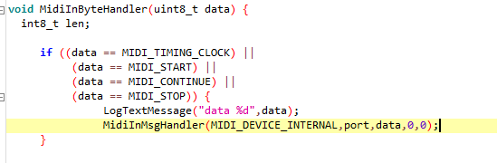

Hello Axo peoples !
Im trying to get midi sync messages into the axo UART PA3 method , with hug patch as a starting point.
I have a good setup where I can send and receive CC , notes and reroute it to internal midi as expected.
Now .
When I try to get the clock messages , I do receive the status correctly ,
But when trying to send it back to the internal axo port , this doesnt seem to work . Any idea ?
I know by a fact that system messages only have 1 byte , so I assumed I could send the other 2 with 0 .

Im trying to get the clock into the path via drj/midi/clock but no success . inoutmon.axp (7.5 KB)
Would love to know whats the way axoloti handles this MidiInMsgHandler and why is not getting the clock pulses , start , stop etc
I have tried
MidiInMsgHandler(MIDI_DEVICE_INTERNAL,port,0xf8,0,0);
MidiInMsgHandler(MIDI_DEVICE_INTERNAL,port,248,0,0);
MidiInMsgHandler(MIDI_DEVICE_INTERNAL,port,data,0,0);
MidiInMsgHandler(MIDI_DEVICE_INTERNAL,port,0xf8,data,0);just to check if Im missing something , but I hit a wall .Thanks for any suggestion
{kind=link}